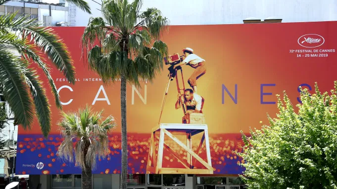

The Cannes Film Festival is an annual film festival held in Cannes, France, which previews new films of all genres, including documentaries from all around the world. Here are nine of the films that generated the most buzz ...
266 3